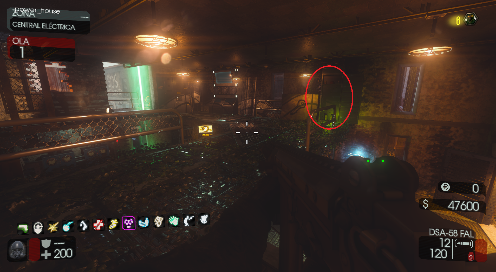
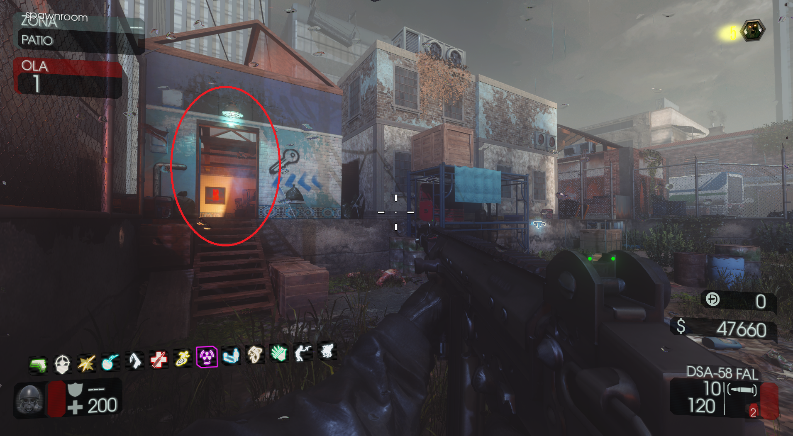

Requisitos:
Activar la electricidad.
Tendremos que ir al edificio de la electricidad y obtener las llaves dentro de una taquilla.

Después volveremos a la zona del patio y podremos abrir la puerta de la sala que da al Spawn y al Jügger-Nog.

Luego tendremos que buscar tres hachas en el mapa, aquí las localizaciones: